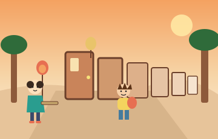
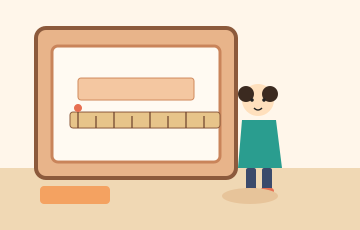
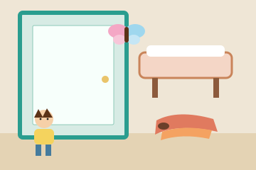
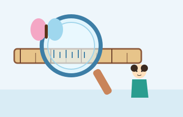
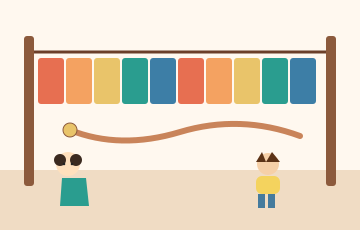
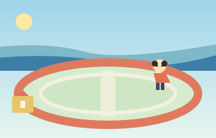
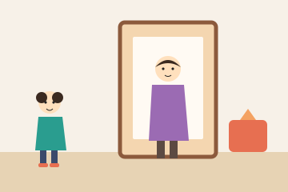

竹尺巷的河灯
0 挨着边，单位才肯开门
人教版三年级上册 · 约 15～20 分钟
第一章 竹尺不从 1 起


河灯夜的前一个黄昏，竹尺巷静得能听见纸灯笼的竹骨在响。巷子尽头是周爷爷的灯笼铺。今晚河上要点灯，六道木门却都关着。门开不开，不看谁跑得快，看门上的长度有没有写对。
小美把竹尺捧在手里。尺头有一个刻得很深的圆点，那是 0。周爷爷只叮嘱过一句：「量东西，0 要挨着边。从 1 开始，数就会多出一截。」
邻居阿禾抱着一摞灯笼纸跑在前面，鞋带甩来甩去。他的口头禅是：「我量得最快！」
第一道门上钉着一张窄纸条。门楣的字很少：量准它有多长，门才开。
阿禾把竹尺按上去，拇指压住「1」那条长线，正好压在纸条左边。「右边到了 6 厘米还多一点点，我看成 62 毫米！够了吧？」
门没有动。竹尺轻轻一弹，0 那一头翘在纸条外面，像在摇头。
「尺不答应。」小美说，「你从 1 量的。0 还空在边上。右边那个数里，藏着不该算进去的一截。我们自己拖，让 0 挨着左边，再读右边。」
拖动竹尺，量这张纸条
阿禾把 1 厘米压在纸条左边，红色的 0 还在虚线更左面。想让 0 靠过去，就把尺子往右拖。也可以一次挪 1 毫米或 1 厘米。
纸条长多少毫米？只填数字。
第二章 门有多高，鞋有多短
第一道门开了一条缝。纸条长 52 毫米。0 挨着边，右边直接就是 5 厘米 2 毫米。从 1 厘米量起时，右边对着 62 毫米，还要再减去起点的 10 毫米。

第二道门比第一道厚。雨水把四个单位冲淡了，只剩下数字。门框上还夹着一只小小的纸蝴蝶。
纸条上是四件事：这扇门高约 2；纸蝴蝶一边翅膀约 35；周爷爷的床长约 2；阿禾的鞋长约 20。四个单位都放对，门才开。
阿禾眼快：「2 很小，写分米。35 比 2 大，写厘米。床也是 2，还是分米。鞋写着 20，比 2 大，也写分米。我量得最快！」
他把「分米」往门上按。门纹丝不动。
小美没有笑他。「先别写。一拃大约 1 分米。你用手比一比，这扇门有几拃？纸蝴蝶有没有一把学生尺那么长？鞋要是写成 20 分米，先用 1 米＝10 分米换一下，这只鞋还穿得进吗？」
阿禾举起手，在门的下沿就比完了。上面仍旧是一大块晚霞。蝴蝶的翅膀薄薄的，比指甲盖大一圈。他的鞋只盖住地面短短一截。
把东西放进合适的单位
先点一件东西，再点单位。也可以按住东西，拖到单位上松开。
第三章 放大镜里的十个小格
第二道门松开了闩。门高约 2 米，不是 2 分米。2 分米大约只有 20 厘米。纸蝴蝶一边翅膀约 35 毫米，35 厘米才有一把学生尺那么长。床长约 2 米。鞋长约 20 厘米。20 分米＝2 米，一只鞋不能跟门一样高。

第三道门前吊着两条灯穗，看起来都短短的。门上画着一个圆圈：70 毫米 ○ 7 厘米。填大于，走向旁边的水沟；填小于，走进花架；填等于，正门才开。
阿禾已经迈出半步：「70 比 7 大！填大于！我量得最快！」
水沟边的石头凉凉的。他探头看完，又跳回来，鞋帮湿了一点。「石头说，你在比 70 和 7，两家单位还没坐到一张桌子上。」
他不服气：「厘米很小，1 厘米该等于 100 毫米吧？7 乘 100 是 700。70 比 700 小，那就填小于！」
小美掏出周爷爷的铜放大镜。「100 先别用。1 厘米里面到底有几格，我们数清楚，再决定圆圈里填什么。」
把放大镜拖到 0 和 1 中间
按住圆镜拖动。盖住 0 到 1 厘米以后，按「数一数」。
第四章 十段彩条和一根灯笼绳
等于号落上去，正门开了。1 厘米＝10 毫米。7 厘米＝7×10＝70 毫米。两条灯穗一样长。70 比 7 大，比的却不是同一家单位。100 是 1 米有多少厘米，不能借给毫米用。

第四道门要一条 1 米长的横幅，挂上去，灯笼队才许通过。铺里找不到整张 1 米的纸，只有一叠正好 10 厘米的彩条。
阿禾捏着一条比了比：「10 厘米很短。要拼到 1 米，得拼一百条吧？」
「一条是 10 厘米，不是 1 厘米。」小美说，「你把条数和厘米数当成了同一个数。一条一条拼，拼到刚好 1 米就停。每一条也是 1 分米。」
把 10 厘米的彩条拼成 1 米
横幅齐了。门上还有第二句话，写在绳结旁边：灯笼绳长 2 米，剪下 8 分米去绑最前面那盏，还剩多少分米？
阿禾在墙上列式：「2 米＝200 分米。200−8＝192 分米。还剩这么长，够绕巷子！」墙上的粉笔亮了亮，又暗了。门不吃这个 192。
小美指着刚拼好的横幅。「你把米和分米的进率当成了 100。100 是厘米那一家。看这 10 格：它们是 1 米。2 米有几个这样的 10？100 分米换成米，是乘 1000，还是除以 10？300 厘米换成米，进率是 10，还是 100？」
这 10 格是 1 米，也是 10 分米。灯笼绳有 2 米。
第五章 跑道上的一千米
第四道门开的时候，横幅被风托平。2 米＝20 分米，不是 200 分米。剪掉 8 分米，还剩 12 分米。12＋8＝20，20 分米又回到 2 米。100 分米＝10 米，不是 1000 米。300 厘米＝3 米，不是 30 米。10、100、1000 各管各的家。
粉色是剪掉的 8 分米，绿色是剩下的 12 分米。上一行加下一行，是 2 米。

第五道门开在学校操场边上。门外就是河堤。门楣写着：跑到 1 千米，木桥才放灯笼过去。操场一圈 400 米。
阿禾活动了一下脚踝，提笔就写：「400×2.5＝1 千米！」
字写上去的一瞬间，门上的小灯暗了。2 圈再加半圈，路确实能凑成 1 千米。暗掉，是因为等号两边不是同一家人。
「400 的单位是米。」小美说，「左边还是米，右边忽然写成千米，门不认。先把米数写完，换算另起一行。2 圈是 400×2，半圈是 400 的一半。加起来，再换成门要的千米。」
阿禾不服：「那我写成 1000 千米，总该很大、很对了吧？」
小美指指河堤外淡淡的山影。「1000 千米是一千个 1 千米。我们只是绕着操场跑。先看跑到多少米。」
看小美跑完 2 圈加半圈
小旗是起点。一圈 400 米。可以一圈一圈跑，也可以一口气跑到 2.5 圈。
还在起点，0 米。
米数写对了，木桥还差一块牌子。河堤上每隔 500 米一盏灯，一共 6 盏，从操场口排到河岸。牌子问：这段是多少千米？
阿禾脱口而出：「6×500＝3000。填 3000！我量得最快！」
「3000 的后面是米。」小美说，「牌子问的是千米。算完米，还要再换一次。数对了，单位停在半路，门还是不开。」
第六章 妈妈站在门边
桥栏上的灯一盏一盏亮到对岸。400×2＝800 米，半圈 200 米，一共 1000 米。1000 米＝1 千米，要另写一行，不能跟米写在同一个等号上，也不是 1000 千米。6 盏灯是 3000 米，等于 3 千米，不是 3000 千米。

最后一道门不高，恰好容得下一个人。妈妈赶来帮忙提灯笼，站在门边。门上新贴着一张纸条：妈妈高约 1 米 6 ____。单位填对，门才开。
阿禾看了一眼就写：「厘米！1 米 6 厘米。」
妈妈弯下腰，让他看自己的肩。「6 厘米大约有多长？比一比你的手指。」
阿禾比了比。6 厘米只有一个手指节多一点。妈妈比 1 米高出的那一截，比这长得多，差不多到小美的额头再往上。
「1 米 6 厘米，只比 1 米多出一点点。」小美说，「妈妈没有这么矮。毫米就更薄，6 毫米像一枚硬币的厚度。1 米后面再来一个 6，先想一想是哪一家单位。」
1 米＝100 厘米。6 分米要先变成厘米，再和 100 厘米加在一起。
小美点点头。6 分米＝60 厘米。100＋60＝160。妈妈大约高 160 厘米，也就是 1 米 6 分米。
蓝色 10 格是 1 米，紫色 6 格是多出来的 6 分米。合在一起是 16 分米。
门还要最后一次回头看。周爷爷拿出四段彩绳，让他们从大到小挂上最后一道门：200 厘米，30 分米，4 米，50 分米。
阿禾把 50 分米捏在最下面：「50 最小，因为 50 比 200 小。」
「你把 50 分米当成了 50 厘米。」小美说，「先全部换成厘米，再比谁长。分米换厘米，进率是 10。米换厘米，进率是 100。」
从大到小点。点错会告诉你为什么。
还没排。
河灯顺着刻度走
四段彩绳按真正的长短挂好：50 分米，4 米，30 分米，200 厘米。换成厘米，是 500、400、300、200。最后一道门开了。
灯笼队走到河边。纸灯一盏一盏放下水，河面像一条会发光的尺。
周爷爷没有再出题。他只问：「倒着走过了吗？」
小美从最后一道门往回说。
「妈妈是 1 米 6 分米，等于 160 厘米，不是 1 米 6 厘米。四段绳子都换成厘米以后，50 分米最长，200 厘米最短。」
「操场 2 圈加半圈是 1000 米，等于 1 千米。不能写成 400×2.5＝1 千米，等号两边单位不一样。6 盏灯是 3000 米，等于 3 千米，不是 3000 千米。」
「灯笼绳 2 米等于 20 分米，不是 200 分米。剪掉 8 分米，还剩 12 分米。100 分米等于 10 米。300 厘米等于 3 米。」
「两条灯穗一样长。1 厘米等于 10 毫米，所以 7 厘米等于 70 毫米。」
「第一张纸条是 52 毫米。0 挨着边，直接读 52。从 1 起量，右边是 62 毫米，还要减去 10 毫米。」
阿禾把鞋带系上。他很小声说：「我还是想量得快。可快之前，要先看 0 在不在边上，再看单位是哪一家。」
小美把四句规矩用小字刻在竹尺的套子上。河灯往下游去，一盏跟着一盏，间隔稳稳的，像刻度。
竹尺套上的四句话
- 量长度从 0 起。不从 0 起，就用终点减起点。从 1 厘米量到 6 厘米 2 毫米，是 62−10＝52 毫米。
- 先看东西有多长，再选单位。门大约 2 米，蝴蝶翅膀大约 35 毫米，床大约 2 米，鞋大约 20 厘米。妈妈大约 1 米 6 分米，也就是 160 厘米。
- 进率别混。1 厘米＝10 毫米，1 分米＝10 厘米，1 米＝10 分米＝100 厘米，1 千米＝1000 米。2 米＝20 分米，不是 200 分米。100 分米＝10 米。300 厘米＝3 米。
- 先算完，再换单位。等号两边要同一家人。1000 米＝1 千米，要另写一行。3000 米＝3 千米，不是 3000 千米。
参考说明：本故事为原创，人物、情节和数字都是新编的，没有摘抄版权原文。写法上借鉴了这些书的结构：李毓佩《奇妙的数王国》让每种单位守自己的规矩，规矩用错就会走错路；《数学帮帮忙》（Math Matters）用一件必须今晚办成的事，把数学从生活里逼出来；斯图尔特·J·墨菲的 MathStart 让一个故事盯住长度单位，结尾把已经走过的门倒回去再验一遍；杨红樱《马小跳玩数学》里急性子抢着答、旁边的人拦住，这里换成了新的人物和新的河灯夜。内容对照人教版三年级上册「毫米、分米和千米」的认识与换算，不照搬课本例题，也不编造页码。
回到总目录：数学课件